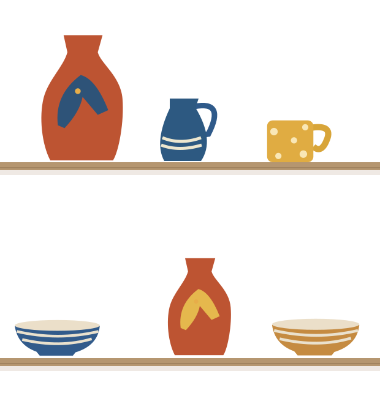

شکل دادن
گل را ورز میدهیم و آرام روی چرخ بالا میآوریم.
سفال دستساز برای سفرههای هر روز و کارگاههایی برای اولین قرار تو با گل.
دیدن کارگاهها ظرفهای دستساز
با دستدر کارگاه ماگل در این کارگاه از دستی به دست دیگر میرسد؛ از ورز دادن و شکل دادن تا لعاب و آخرین پخت. تفاوتهای کوچک، نشانهٔ دست سازندهاند.
از گل تا ظرفگل را ورز میدهیم و آرام روی چرخ بالا میآوریم.
قطعه در سایه میماند تا آمادهٔ اولین پخت شود.
لعاب میزنیم و ظرف را برای آخرین بار به کوره میسپاریم.
«چیزی که با دست ساخته میشود،
زمان را هم با خود نگه میدارد.»
برای پرسیدن دربارهٔ دورهها یا یکی از ظرفها، اینجا برامون بنویس.
خانهٔ سفال، کنار حیاط کارگاه